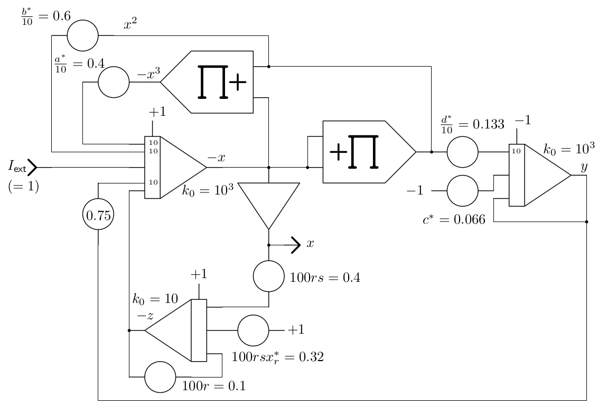

The Hindmash-Rose-model of neuronal bursting¶
Beginning in the early 20th century, the behaviour of neurons has been described by increasingly realistic mathematical models. The very first of these models is called integrate-and-fire and is due to Lous Lapicque who developed it in 1907. A better model was developed in the early 1960s by Richard FitzHugh and J. Nagumo and is described by
This model is still pretty simple and it can be shown that is basically equivalent to the van der Pol equation
which was devised by Balthasar van der Pol in 1920 as a result of his pioneering work on vacuum tubes and oscillator circuits. Accordingly, the FitzHugh-Nagumo model is basically a relaxation oscillator 1 controlled by an external stimulus \(I_\text{ext}\).
A much more interesting model is due to Hindmarsh and Rose 2 and consists of three coupled differential equations
with the parameters \(a=1\), \(b=3\), \(c=1\), \(d=5\), \(r=10^{-3}\), \(s=4\), \(x_r=-\frac{8}{5}\) and initial conditions of \(2\) for all three integrators in the final setup.
As quick numerical simulation shows, see figure 1, the system must be scaled before programmed on an analog computer. Scaling is most easily done manually by first applying proper scaling factors to the variables \(x\), \(y\), and \(z\). If, e.ġ., \(z\) is to be scaled by a factor of \(\frac{1}{2}\), every input of the integrator yielding \(-z\) is scaled down by that factor. To compensate for this, \(-z\) (or \(z\)) must be scaled up by a corresponding factor of \(2\) at all inputs of computing elements using this variable etc. In the end, these various factors scaling values down and up tend to cancel out in most cases, so that typically only a few additional potentiometers are required for a scaled analog computer program as compared with an unscaled program.
Figure 1: Numerical simulation of the three coupled differential equations (1), (2) and (3). |
The resulting scaled computer setup is shown in figure 2. The scaled parameters are these: \(a^*=4\), \(b^*=6\), \(c^*=0.066\), \(d^*=1.333\), \(r=10^{-3}\), \(s=4\), \(x^*_r=0.8\) with initial conditions of \(\pm1\) accordingly. A bit problematic here are the values \(r\) and the resulting value of the product \(rsx^*_r=0.0032\). It is not practical to setup values that small directly on a manual potentiometer. In cases like this, the time-scale factor of the affected integrator can be used to gain an additional scaling factor of \(10^n\) as shown in the setup. Furthermore, the products \(rs=0.004\) and \(rsx^*_r=0.0032\) are setup on additional potentiometers.

|
Figure 2: Scaled analog computer setup for the Hindmarsh-Rose model |
Figure 3 shows a typical result obtained by this analog computer circuit with \(I_\text{ext}=1\). The yellow trace depicts the output potential of the neuron (\(x)\), the green trace corresponds to the amount of potassium channels (\(y\)), and the orange channel shows \(z\).
Figure 3: Typical result of spiking neuron simulation |
[Hindmarsh et al. 1982] J. L. Hindmarsh, R. M. Rose, “A model of the nerve impulse using two first-order differential eequations”, in Nature, Vol. 296, 11th March 1982, pp. 162–164
[Hindmarsh et al. 1984] J. L. Hindmarsh, R. M. Rose, “A model of neuronal bursting using three coupled first order differential equations”, in Prov. R. Soc. Lond., B 221, 87–102 (1984)